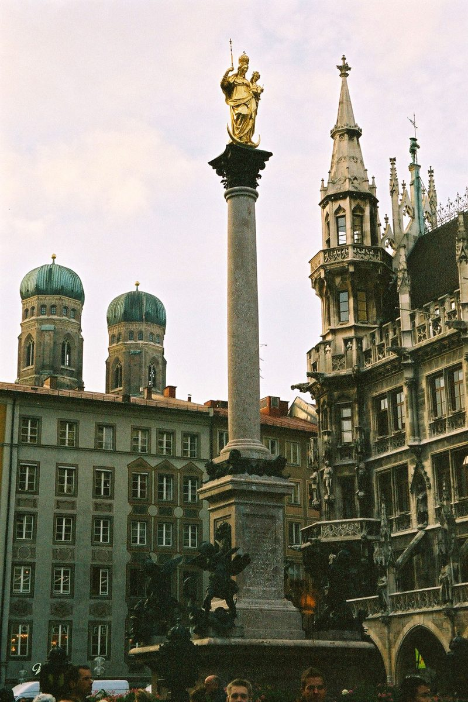

Descubre el encanto del Marienplatz en Múnich

El Marienplatz es el corazón de Múnich y uno de los lugares más emblemáticos de Alemania. Este espacio histórico, lleno de vida y cultura, es un punto de partida perfecto para explorar la capital bávara. Si estás planeando una visita, aquí te contamos todo lo que necesitas saber para disfrutar al máximo de esta increíble plaza.
¿Cómo llegar al Marienplatz?
El Marienplatz está situado en el centro de Múnich, lo que lo hace muy accesible. La forma más sencilla de llegar es en transporte público. Las líneas U3 y U6 del metro tienen una parada directamente en la plaza, lo que facilita enormemente el acceso desde cualquier parte de la ciudad. También puedes llegar en autobús o tranvía, ya que varias líneas tienen paradas cercanas. Si prefieres caminar, el Marienplatz está a poca distancia de otros puntos de interés como la Catedral de Nuestra Señora (Frauenkirche) o el Viktualienmarkt.
La mejor época para visitar
Múnich es una ciudad que puede disfrutarse en cualquier época del año, pero el Marienplatz tiene un encanto especial durante las festividades. Si visitas la ciudad en diciembre, podrás disfrutar del famoso Christkindlmarkt, el mercado navideño que transforma la plaza en un lugar mágico lleno de luces y aromas navideños. En primavera y verano, el clima es más agradable para pasear y disfrutar de los cafés al aire libre. Eso sí, ten en cuenta que durante estos meses la plaza puede estar más concurrida.
Los principales atractivos del Marienplatz
El Marienplatz es mucho más que una simple plaza. Aquí te dejamos algunos de los lugares que no puedes perderte:
- El Nuevo Ayuntamiento (Neues Rathaus): Este imponente edificio neogótico es el símbolo del Marienplatz. No te pierdas el famoso carillón, que suena varias veces al día con figuras en movimiento que recrean escenas históricas.
- La Columna de María (Mariensäule): Situada en el centro de la plaza, esta columna fue erigida en el siglo XVII para celebrar el fin de la ocupación sueca. Es un punto de referencia y un símbolo de protección para la ciudad.
- Las tiendas y cafés: Alrededor de la plaza encontrarás numerosas tiendas, desde grandes almacenes hasta pequeñas boutiques, así como cafés y restaurantes donde disfrutar de la gastronomía local.
- El Antiguo Ayuntamiento (Altes Rathaus): Este edificio histórico, de estilo gótico, contrasta con el Nuevo Ayuntamiento y alberga un museo de juguetes.
¿Dónde comer cerca del Marienplatz?
La gastronomía es una parte esencial de cualquier visita a Múnich. Cerca del Marienplatz encontrarás una gran variedad de opciones para disfrutar de la comida bávara. Aquí tienes algunas recomendaciones:
- Bratwurst: Las salchichas alemanas son un imprescindible. Prueba las típicas bratwurst en alguno de los puestos callejeros o en los restaurantes tradicionales.
- Pretzels: Estos panes con forma de lazo son una delicia típica. Perfectos para picar mientras exploras la plaza.
- Cerveza: No puedes visitar Múnich sin probar su famosa cerveza. En los biergartens cercanos podrás disfrutar de una buena pinta en un ambiente típico.
Consejos finales para tu visita
El Marienplatz es un lugar lleno de historia y cultura, pero también puede ser muy concurrido, especialmente durante los fines de semana y en temporada alta. Para evitar aglomeraciones, intenta visitarlo por la mañana temprano o a última hora de la tarde. Además, lleva calzado cómodo, ya que hay mucho que caminar y explorar. No olvides llevar una cámara, porque cada rincón de esta plaza es perfecto para una foto.
En resumen, el Marienplatz es un lugar que encapsula la esencia de Múnich. Ya sea por su arquitectura, su historia o su ambiente animado, esta plaza seguramente será uno de los puntos destacados de tu viaje. ¡No te lo pierdas!
Haiktec
- Control de Gastos y Presupuesto para Cuidadores de Ancianos
- Planificador de Presupuesto y Seguimiento de Gastos para Bodas
- 7 Estrategias Inteligentes para Ahorrar en Casa: Guía Práctica para Hombre
Text mit KI erstellt und automatisch geprueft.